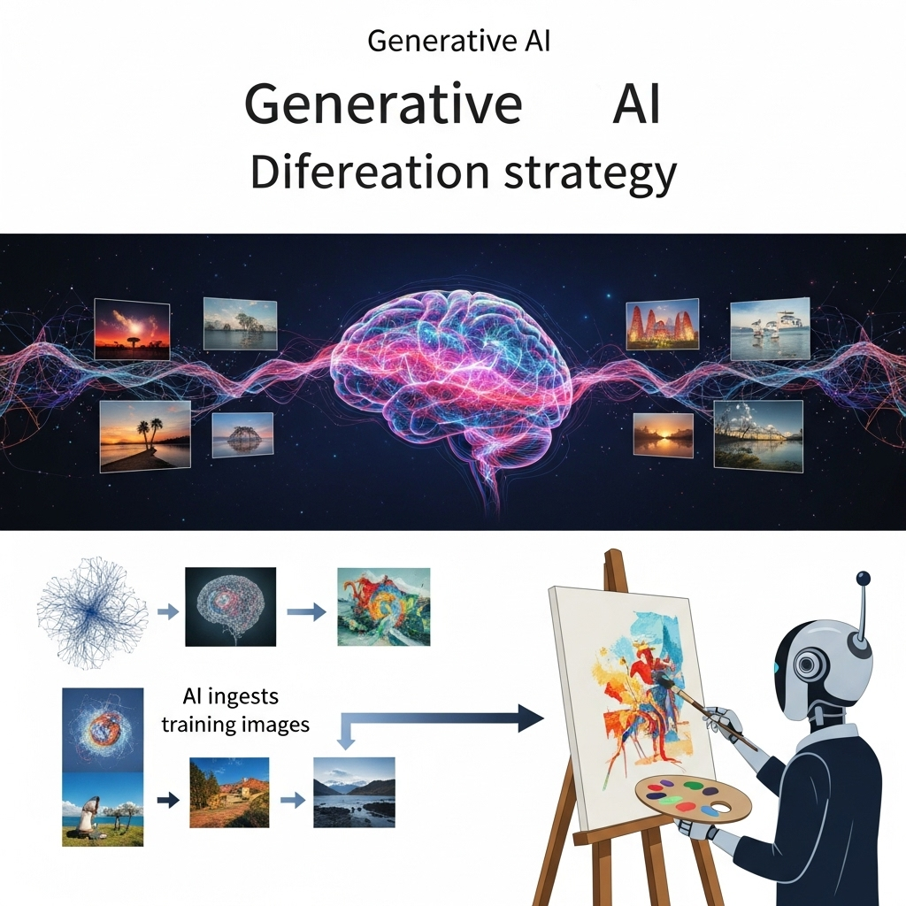
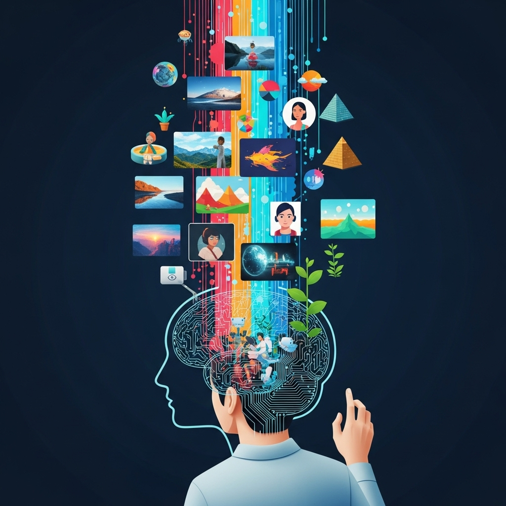
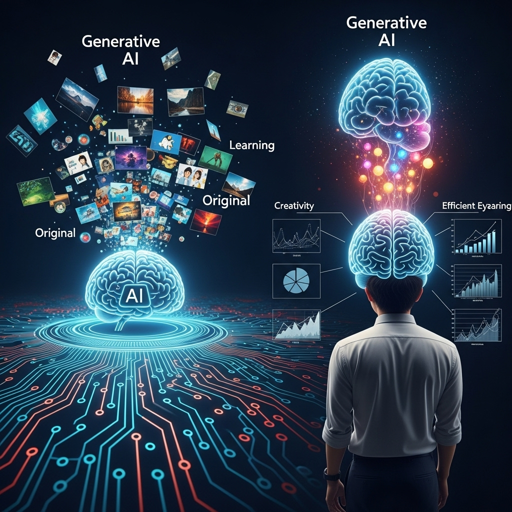
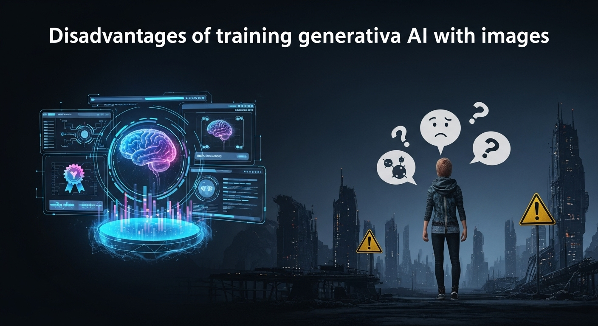
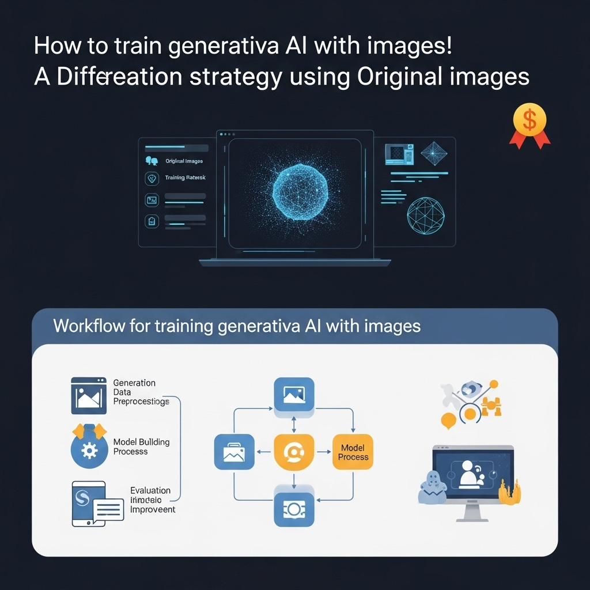
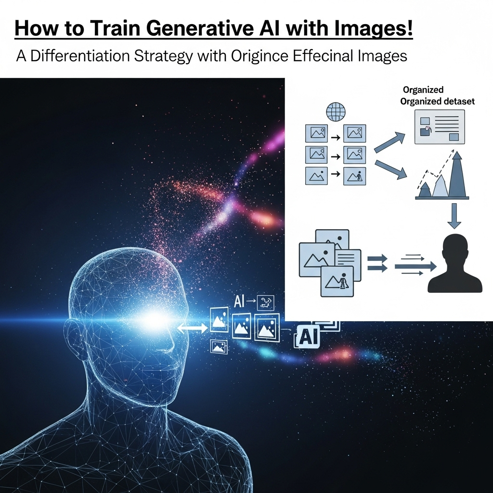
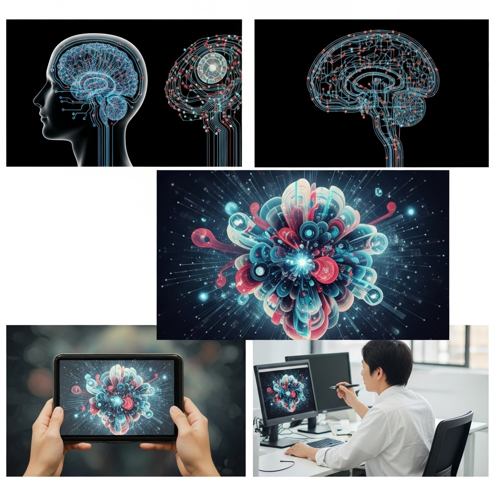

生成AIに画像を学習させる方法を解説！オリジナル画像で差別化戦略

導入
現代社会において、視覚情報は私たちの生活やビジネスにおいて、これまで以上に重要な役割を担っています。特にデザイン業界においては、ブランドイメージの構築からプロモーション、日々のコミュニケーションに至るまで、高品質で魅力的な画像が不可欠です。しかし、時間やコスト、そしてクリエイティブなリソースには常に限りがあり、その中でいかに効率的かつ独自性の高いビジュアルコンテンツを生み出すかは、多くのデザイン事務所や企業にとって切実な課題となっています。
近年、目覚ましい進化を遂げている生成AI技術は、この課題に対する強力な解決策として注目されています。特に、AIに特定の画像を学習させることで、既存の汎用AIでは実現できなかった、独自の画風やキャラクター、ブランドイメージを忠実に再現した画像を生成する能力は、デザイン業界に革新をもたらす可能性を秘めています。
この技術を活用することで、デザイン事務所はクライアントの細かな要望に柔軟に応え、競合との差別化を図り、そして何よりも、クリエイティブな表現の幅を大きく広げることができるようになります。一方で、AIへの画像学習には、初期の準備や技術的な理解、著作権や倫理的な配慮といった、乗り越えるべきハードルも存在します。
本記事では、生成AIに画像を学習させることの重要性から、その具体的なメリット・デメリット、そして実際に学習させるための作業の流れや、効果的なデータ準備のポイント、さらには活用実践例に至るまで、幅広くかつ詳細に解説していきます。読者の皆様が、この最先端技術を自社のビジネスにどのように取り入れ、新たな価値を創造していくか、その一助となれば幸いです。落ち着いたトーンで、しかししっかりと、生成AIを活用した未来のデザインワークについて深く掘り下げてまいりましょう。
生成AIに画像を学習させる重要性

デザイン業界は常に変化と進化を求められる分野です。顧客のニーズは多様化し、市場の競争は激化する一方、クリエイティブな表現の限界を押し広げるための新たな技術への期待も高まっています。このような状況の中で、生成AIに画像を学習させるというアプローチは、単なる効率化ツールを超え、デザイン事務所が未来に向けて競争力を維持し、さらには飛躍するための不可欠な戦略となりつつあります。
このセクションでは、なぜ今、生成AIに画像を学習させることがこれほどまでに重要なのか、その背景にある課題と、AIがもたらす可能性について深く掘り下げて解説します。
既存の画像生成AIの限界とデザイン事務所の悩み
今日の市場には、MidjourneyやDALL-E、Stable Diffusionといった素晴らしい画像生成AIが数多く存在します。これらのツールは、テキストプロンプトに基づいて驚くほど高品質な画像を生成する能力を持ち、すでに多くのクリエイターや企業で活用されています。しかし、その汎用性の高さゆえに、特定のブランドイメージや独自の画風、あるいは特定のキャラクターを「完璧に」再現することには限界があるのが現状です。
例えば、あるデザイン事務所が、長年培ってきたクライアントのブランドガイドラインに沿った、特定のタッチのイラストや、過去のキャンペーンで登場したオリジナルキャラクターを基にした画像を必要としているとしましょう。既存の汎用AIでは、プロンプトをどれだけ詳細に記述しても、そのニュアンスや細部の特徴を完全に捉えきれないことが少なくありません。生成される画像は「それっぽい」ものは多いものの、「まさにこれだ」というレベルには至らないケースが頻発します。結果として、生成された画像を基に、デザイナーが手作業で修正を加えるか、あるいは最初から手作業で制作する二度手間が発生し、AI導入による効率化の恩恵が限定的になってしまうのです。
このような状況は、特にブランドの独自性や一貫性を重視するクライアントを持つデザイン事務所にとって、大きな悩みとなります。クライアントは、そのブランドが持つ「顔」や「声」を、ビジュアルを通じて一貫して表現することを求めます。汎用AIが生成する画像は、時に予期せぬスタイルやディテールを含み、ブランドの一貫性を損なうリスクもはらんでいます。これにより、デザイン事務所は、AIの導入によるコスト削減や納期短縮の期待と、ブランドイメージの維持というジレンマに直面することになるのです。
また、既存のAIツールが学習しているデータセットは、インターネット上の膨大な画像から構成されており、特定のニッチな分野や、まだ世に出ていない独自のクリエイティブスタイルをカバーしているわけではありません。そのため、最先端のデザイントレンドや、特定の文化圏に特化した表現など、よりパーソナルで専門的なニーズに応えることが難しいという側面もあります。これらの限界が、デザイン事務所が生成AIを最大限に活用する上で、大きな壁として立ちはだかっていたのです。
オリジナルの画像を求めるクライアントニーズの高まり
デジタル化が進み、情報が氾濫する現代において、企業やブランドが競合と差別化を図るためには、単に高品質なだけでなく、「唯一無二」の価値を持つビジュアルコンテンツが不可欠となっています。消費者は、画一的なイメージやどこかで見たことのあるようなビジュアルではなく、そのブランドならではの個性や物語性を強く求めるようになってきました。このような背景から、クライアントがデザイン事務所に求める要望は、ますます「オリジナリティ」へとシフトしています。
かつては、ストックフォトや汎用的なイラスト素材で事足りた場面でも、今では「このブランドの世界観を表現する、完全にオリジナルの画像を」「他社にはない、私たちだけのキャラクターを」「一目で私たちの企業だとわかる、独自の画風で」といった具体的なオーダーが増加しています。これは、ブランドが持つ独自の価値を視覚的に表現し、顧客との深いエンゲージメントを築きたいという強い意図の表れです。
しかし、このようなオリジナル性の高い画像をゼロから制作するには、多大な時間とコストがかかります。熟練のイラストレーターやデザイナーに依頼すれば、そのクオリティは保証されますが、複数のバリエーションや大量の画像が必要になった場合、納期や予算の制約が大きな課題となります。特に、Webサイトのリニューアルや大規模なキャンペーン、ソーシャルメディアでの継続的なコンテンツ発信など、常に新しいビジュアルが求められる場面では、この課題はより顕著になります。
このようなクライアントニーズの高まりは、デザイン事務所にとって新たなビジネスチャンスであると同時に、クリエイティブな挑戦でもあります。限られたリソースの中で、いかにクライアントの期待を超えるオリジナル画像を効率的に提供できるか。この問いに対する有力な答えこそが、生成AIに特定の画像を学習させ、ブランド固有のビジュアルを生成する技術なのです。このアプローチは、クライアントの「オリジナリティを求める声」に、これまで以上に迅速かつ柔軟に応えることを可能にし、デザイン事務所の提案力を格段に向上させます。
AI活用でデザイン業務の幅を広げる可能性
生成AIに画像を学習させることは、単に既存の業務を効率化するだけでなく、デザイン事務所がこれまで手掛けることのできなかった領域へと、その業務の幅を大きく広げる可能性を秘めています。これは、AIが「創造のパートナー」として機能することで、デザイナーのクリエイティブな発想を刺激し、新たな表現方法やビジネスモデルを生み出す源泉となるからです。
まず、AIは「アイデアの可視化」において強力なツールとなります。クライアントとの打ち合わせや企画段階で、頭の中にある漠然としたイメージを、具体的なビジュアルとして迅速に提示できるようになります。例えば、「未来的な都市の風景に、弊社のキャラクターが活躍する様子」といった抽象的な要望に対しても、学習済みのAIを活用すれば、短時間で複数のコンセプトアートやイメージボードを生成し、クライアントの理解を深め、より具体的な議論へと導くことが可能です。これにより、企画提案の質が飛躍的に向上し、クライアントからの信頼獲得にも繋がります。
次に、AIは「パーソナライズされたデザイン」の実現を加速させます。例えば、ターゲット層ごとに異なるビジュアルを大量に生成する必要があるマーケティングキャンペーンにおいて、AIは学習したデータに基づいて、それぞれの層に響くデザイン要素を組み合わせた画像を自動で生成できます。これにより、顧客一人ひとりに最適化されたコンテンツを提供することが可能となり、エンゲージメントの向上やコンバージョン率の改善に貢献します。これまで手作業では非現実的だった規模のパーソナライズが、AIによって実現可能になるのです。
さらに、AIは「新たなクリエイティブ表現の探求」を促します。特定の画風を学習させたAIは、そのスタイルを基盤としながらも、プロンプトの調整や異なる要素との組み合わせによって、デザイナー自身も予期しなかったような、斬新でユニークな表現を生み出すことがあります。これは、デザイナーが固定観念に囚われず、AIとの対話を通じて、自身のクリエイティブな視野を広げるきっかけとなります。AIが生成した「予期せぬ美」からインスピレーションを得て、全く新しいデザインコンセプトが生まれる可能性も十分にあります。
このように、生成AIの活用は、デザイン事務所が提供できるサービスの範囲を拡大し、より高度で付加価値の高い提案を可能にします。効率化だけでなく、クリエイティブな挑戦と新たな価値創造の機会を提供することで、デザイン業務の未来を大きく変革する可能性を秘めているのです。AIを単なるツールとしてではなく、クリエイティブなパートナーとして捉えることで、デザイン事務所は未踏の領域へと踏み出し、その可能性を無限に広げることができるでしょう。
生成AIに画像を学習させるメリット

生成AIに特定の画像を学習させるというアプローチは、デザイン事務所にとって非常に多くのメリットをもたらします。これは単に作業の効率化に留まらず、ビジネスの競争力強化、クライアント満足度の向上、そしてクリエイティブな可能性の拡大に直結するものです。このセクションでは、その具体的なメリットを一つ一つ丁寧に解説し、AI学習がデザイン業務にもたらす変革の全貌を明らかにします。
メリット１．独自の画風やキャラクターを再現しブランドを確立
現代の市場において、ブランドの独自性は成功の鍵を握ります。消費者は、数多ある商品やサービスの中から、自分たちの価値観に合致し、心に響くものを求めています。その際、視覚的な一貫性、つまり「ブランドの顔」が果たす役割は計り知れません。生成AIに特定の画像を学習させることは、このブランド確立において、計り知れないほどの強力な武器となります。
想像してみてください。あるデザイン事務所が、特定のクライアントのために、長年にわたり独自のキャラクターデザインやイラストスタイルを確立してきたとします。しかし、そのキャラクターを様々なシチュエーションで、あるいは異なるポーズで描くたびに、熟練のイラストレーターに依頼し、時間とコストをかけて制作する必要がありました。ここに生成AIが介入することで、状況は一変します。
AIに、これまでに制作された数々のオリジナルキャラクターや、特定の画風で描かれたイラスト群を学習させることで、AIはその「スタイル」や「特徴」を深く理解し、再現できるようになります。例えば、愛らしいマスコットキャラクターであれば、AIは学習データからその顔の比率、目の形、体のバランス、毛並みのテクスチャ、さらには感情表現のニュアンスまでをも吸収します。そして、ユーザーが「笑顔で手を振るキャラクター」や「困った顔で何かを指差すキャラクター」といったプロンプトを与えるだけで、学習済みのスタイルで、一貫性のある新しい画像を生成してくれるのです。
この能力は、ブランドイメージの一貫性を保つ上で極めて重要です。ウェブサイト、パンフレット、SNS投稿、広告バナー、商品パッケージなど、あらゆるタッチポイントで、常に同じ「顔」を持つキャラクターや、統一された画風のイラストを展開することが可能になります。これにより、消費者はそのブランドを一目で認識し、親近感や信頼感を抱きやすくなります。結果として、ブランド認知度が高まり、ロイヤルティの構築にも大きく貢献するでしょう。
また、特定の画風をAIに学習させることで、そのスタイルを「資産」として蓄積・活用できるようになります。特定のイラストレーターに依存することなく、その画風を再現した画像をいつでも、必要なだけ生成できるようになるため、長期的なブランド戦略において柔軟性と持続可能性がもたらされます。これにより、デザイン事務所は、クライアントに「あなただけのオリジナル」を、より迅速かつコスト効率良く提供できるようになり、競合他社との明確な差別化を図ることが可能となるのです。
メリット２．外部委託コスト・納期を削減し生産性を向上
デザイン業務におけるコストと納期は、常にビジネスの成否を左右する重要な要素です。特に、イラスト制作や画像加工といったクリエイティブな作業は、専門性の高さゆえに外部委託に頼ることが多く、それがコスト増大や納期長期化の主要因となることが少なくありませんでした。生成AIに画像を学習させることは、これらの課題を劇的に解決し、デザイン事務所の生産性を飛躍的に向上させる強力な手段となります。
まず、外部委託コストの削減効果は非常に大きいです。特定の画風やキャラクターをAIが学習することで、これまでイラストレーターや写真家、あるいは専門のレタッチャーに依頼していた作業の一部、あるいは大部分を内製化できるようになります。例えば、既存のキャラクターを様々なポーズや表情で描いてもらう、あるいは商品のババリエーション画像を生成するといったタスクは、AIによって迅速かつ低コストで実行可能です。これにより、高額な制作費やライセンス料を削減し、予算をより戦略的なクリエイティブ活動やマーケティングに振り分けることが可能になります。
次に、納期の短縮効果も目覚ましいものがあります。従来の外部委託では、依頼から見積もり、制作、フィードバック、修正、納品という一連のプロセスに数日、場合によっては数週間を要することも珍しくありませんでした。しかし、学習済みのAIを活用すれば、プロンプトを入力するだけで数秒から数分で複数の画像を生成できます。これにより、クライアントからの急な要望や、短期間で大量のビジュアルが必要となるプロジェクトにも、迅速かつ柔軟に対応できるようになります。デザインの初期段階でのアイデア出しや、複数のコンセプトを比較検討する際にも、瞬時に多様なビジュアルを生成できるため、意思決定のスピードも向上します。
このコスト削減と納期短縮は、デザイン事務所の生産性全体を押し上げます。デザイナーは、繰り返し発生する定型的な画像生成作業から解放され、より高度なクリエイティブワークや、クライアントとのコミュニケーション、戦略立案といった、人間にしかできない付加価値の高い業務に集中できるようになります。AIが「量」と「スピード」を担保することで、デザイナーは「質」と「深さ」を追求できる環境が整うのです。
結果として、デザイン事務所はより多くのプロジェクトを同時並行で進行できるようになり、収益性の向上に直結します。また、迅速な対応能力は、クライアントからの信頼を厚くし、長期的なパートナーシップの構築にも貢献するでしょう。生成AIへの画像学習は、単なる技術導入ではなく、デザイン業務のビジネスモデルそのものを変革し、持続的な成長を可能にする投資と言えるでしょう。
メリット３．クライアントの細かな要望に柔軟に対応できる
デザイン業務において、クライアントの要望は時に非常に細かく、多岐にわたります。特にビジュアルコンテンツに関しては、「もう少し明るく」「キャラクターの表情を少しだけ変えて」「この要素の色だけ調整して、でも全体のトーンは維持して」といった具体的なフィードバックが頻繁に発生します。これまでのワークフローでは、これらの細かな修正やバリエーション展開に対応するには、多大な時間と労力が必要でした。しかし、生成AIに画像を学習させることで、この課題に対する対応力が劇的に向上し、クライアント満足度を飛躍的に高めることが可能になります。
AIに特定の画風やキャラクター、あるいは特定のオブジェクトの画像を学習させておくことで、プロンプトを調整するだけで、多様なバリエーションを迅速に生成できるようになります。例えば、クライアントが「キャンペーンバナー用に、弊社のマスコットキャラクターが異なる感情表現をしている画像が3パターン欲しい」と依頼したとします。学習済みのAIであれば、「笑顔のキャラクター」「驚いた顔のキャラクター」「困った顔のキャラクター」といったプロンプトを与えるだけで、短時間でそれぞれのイメージに合致した画像を生成できます。さらに、「笑顔のキャラクター、背景は青空、手には風船」のように、背景や小道具、シチュエーションまで細かく指定して生成することも可能です。
この柔軟性は、デザインの初期段階でのコンセプト提案から、最終的な修正フェーズに至るまで、あらゆる段階で威力を発揮します。クライアントから「もう少しレトロな雰囲気にしてほしい」「現代的でミニマルな感じにしてほしい」といった抽象的な要望があった場合でも、AIに学習させたスタイルの中から、あるいは既存のスタイルに新たな要素を組み合わせることで、多様な方向性のデザイン案を素早く提示できます。これにより、クライアントは複数の選択肢の中から最適なものを選ぶことができ、デザインの方向性を決めるプロセスがスムーズになります。
また、AIによる生成は、人間が手作業で行うよりもはるかに迅速であるため、クライアントからの急な変更依頼や、締め切りが迫っている状況下でも、落ち着いて対応できるようになります。例えば、広告出稿直前に「このバナーの背景色だけ変更したい」という要望があったとしても、AIを活用すれば瞬時に対応し、修正版を提出することが可能です。
このように、生成AIへの画像学習は、デザイン事務所がクライアントの細かな、そして変化する要望に対して、これまでにないスピードと柔軟性で応えることを可能にします。これは、クライアントとのコミュニケーションを円滑にし、彼らの期待を上回るサービスを提供することで、長期的な信頼関係の構築に大きく貢献するでしょう。結果として、リピートオーダーの増加や、新たな顧客紹介にも繋がる、非常に重要なメリットと言えるのです。
メリット４．新しいクリエイティブ表現で競合との差別化
デザイン業界は常に進化しており、競合との差別化は持続的な成長のために不可欠です。既存の枠にとらわれず、新しいクリエイティブ表現を追求することは、デザイン事務所が市場で際立つための重要な戦略となります。生成AIに画像を学習させることは、この「新しいクリエイティブ表現」の扉を開き、競合他社にはないユニークな価値をクライアントに提供することで、明確な差別化を図る強力な手段となります。
従来のデザインワークでは、デザイナーのスキルセットや経験、あるいは特定のツールの制約によって、表現の幅が限定されることがありました。しかし、AIは学習したデータに基づいて、人間では思いつかないような組み合わせや、既存のスタイルを融合させた全く新しい表現を生み出す可能性があります。例えば、ある特定のアーティストの画風を学習させたAIに、全く異なるジャンルのオブジェクトや風景を生成させることで、そのアーティストが描いたことのない、しかしそのテイストを強く感じさせるユニークな作品が生まれるかもしれません。これは、デザイナーがAIを「創造的なパートナー」として活用することで、自身のクリエイティブな限界を超え、新たな可能性を探索できることを意味します。
この「新しいクリエイティブ表現」は、クライアントへの提案において強力な武器となります。競合他社が提供するデザインが、一般的なトレンドや過去の成功事例に沿ったものであるのに対し、AIを活用したデザイン事務所は、クライアントに「これまで見たことのない、しかしブランドに完璧にフィットする」ビジュアルを提示できるようになります。例えば、AIが生成した独特のテクスチャやパターン、あるいは特定のキャラクターが織りなす非現実的な世界観は、クライアントの製品やサービスをより魅力的に、そして記憶に残るものとして際立たせるでしょう。
さらに、AIを導入し、独自の学習モデルを構築する能力自体が、デザイン事務所の技術力と先進性を示す証となります。クライアントは、単に美しいデザインだけでなく、最新技術を駆使して新たな価値を創造できるパートナーを求めています。AIを活用した新しい表現は、デザイン事務所が単なる「制作会社」ではなく、「クリエイティブな課題解決のプロフェッショナル」であることをアピールする絶好の機会を提供します。
このような差別化は、新規顧客の獲得だけでなく、既存顧客との関係強化にも繋がります。クライアントは、常に新しいアイデアやソリューションを求めており、AIが提供する革新的な表現は、彼らの期待を上回る感動と満足をもたらすでしょう。結果として、デザイン事務所は市場における独自の地位を確立し、持続的な成長と発展を遂げることが可能になるのです。生成AIへの画像学習は、単なる効率化ツールではなく、クリエイティブな未来を切り拓くための戦略的な投資なのです。
生成AIに画像を学習させるデメリット

生成AIに画像を学習させることは、多くの魅力的なメリットをもたらす一方で、いくつかのデメリットや課題も存在します。これらの側面を事前に理解し、適切な対策を講じることは、AI導入を成功させる上で非常に重要です。このセクションでは、生成AIへの画像学習に伴う主なデメリットを丁寧に解説し、それらに対する現実的な視点を提供します。
デメリット１．学習データ準備とAI学習にかかる初期コスト・時間
生成AIに画像を学習させるプロセスは、決して魔法のように簡単ではありません。特に、独自の画風やキャラクターを再現できるAIモデルを構築するためには、適切な学習データの準備と、そのデータをAIに学習させるための専門的な知識、そして時間とコストが不可欠となります。これらは、AI導入を検討するデザイン事務所にとって、最初の大きなハードルとなるでしょう。
まず、「学習データ準備」にかかるコストと時間は無視できません。AIが特定のスタイルを正確に学習するためには、高品質で多様な学習用画像が大量に必要となります。例えば、特定のキャラクターを学習させる場合、そのキャラクターが描かれた様々なポーズ、表情、シチュエーション、背景の画像が数百枚、場合によっては数千枚単位で求められます。これらの画像は、単に集めるだけでなく、AIが学習しやすいように適切に整理・加工（トリミング、リサイズ、ノイズ除去など）する必要があり、さらに「キャプション付け（タグ付け）」という非常に手間のかかる作業が伴います。
キャプション付けとは、各画像が何を描いているのか、どのような特徴を持っているのかをテキストで詳細に記述する作業です。例えば、「笑顔で赤い帽子をかぶった猫のキャラクターが公園で遊んでいる」といった具体的な説明を、一枚一枚の画像に対して付与していきます。この作業は、AIが画像とテキストの関係性を理解し、正確な画像を生成するために不可欠ですが、非常に地道で時間のかかる作業であり、専門的な知識も必要とします。このデータ準備には、既存の画像資産の棚卸しから、不足している画像の新規制作、そしてキャプション付けに至るまで、数週間から数ヶ月の期間と、それに見合う人件費や外部委託費用が発生する可能性があります。
次に、「AI学習にかかるコストと時間」も考慮すべき点です。生成AIモデルの学習には、高性能なGPU（グラフィック処理装置）を搭載したコンピューターが必要です。これは、自社で高性能なPCを導入するか、あるいはクラウドベースのAI学習サービス（Google Colab Pro, RunPod, Vast.aiなど）を利用するかの選択肢があります。高性能なPCの導入には数十万円から数百万円の初期投資が必要となり、クラウドサービスを利用する場合でも、学習時間に応じた利用料が発生します。
また、AIの学習プロセス自体も、一度で完璧に成功するとは限りません。学習データの質や量、AIモデルの選択、学習パラメータの設定など、様々な要素が生成画像の品質に影響を与えます。そのため、何度か学習をやり直し、生成された画像を評価し、パラメータを調整するといった試行錯誤のプロセスが必要となります。このチューニング作業にも、専門的な知識と時間、そして計算リソースの費用がかかります。
これらの初期コストと時間は、特に中小規模のデザイン事務所にとっては大きな負担となる可能性があります。しかし、この初期投資は、長期的に見れば外部委託コストの削減や生産性向上、新たなビジネスチャンスの創出という形で回収される可能性を秘めています。導入を検討する際には、これらの初期コストと将来的なリターンを慎重に比較検討し、戦略的な投資として位置づけることが重要です。
デメリット２．著作権や倫理的な問題への配慮
生成AIの活用において、最も慎重かつ深く配慮すべき点が、著作権や倫理的な問題です。AIに画像を学習させる行為、そして生成された画像の利用には、既存の法的枠組みや社会的な規範との間で、様々な論点が生じます。これらの問題に対する無理解や軽視は、法的なトラブルやブランドイメージの失墜に繋がりかねません。
まず、学習データに関する著作権の問題があります。AIに画像を学習させる際、その学習データとして著作権で保護された画像を使用することが、著作権侵害にあたるかどうかは、各国で議論が続いています。多くの法域では、AI学習のためのデータ収集は「情報分析のための利用」として、一定の範囲で著作権者の許諾なく行える場合がありますが、その解釈は国や具体的な状況によって異なります。デザイン事務所が自社の作品や、クライアントから許諾を得た素材のみを学習データとして利用する分には問題ありませんが、インターネット上から無差別に画像を収集して学習させる行為は、大きなリスクを伴います。特に、特定のアーティストの作品を模倣する目的で学習させることは、倫理的にも法的にも問題視される可能性が高いでしょう。
次に、生成された画像の著作権の問題です。AIが生成した画像の著作権が誰に帰属するのか、という点も、まだ明確な法的結論が出ていません。AIが完全に自律的に生成した画像は、人間の創作性を伴わないため著作権が発生しないとする見解や、AIを操作した人間（プロンプト作成者など）に著作権が帰属するという見解、あるいはAI開発者やモデル提供者に帰属するという見解など、様々な議論があります。デザイン事務所がAIで生成した画像を商業利用する際は、その画像の著作権が誰にあり、どのような利用条件が課せられるのかを、事前に確認し、必要であれば権利者との合意形成を図ることが不可欠です。特に、AIサービスによっては、生成物の著作権に関する利用規約が設けられているため、その内容を熟読し遵守する必要があります。
さらに、倫理的な問題も深く考慮すべきです。
- クリエイターへの影響: AIが特定の画風を学習し、そのスタイルで画像を生成できるようになることは、その画風を持つクリエイターの生計に影響を与える可能性があります。AIによる模倣が、クリエイターの権利や努力を不当に侵害しないよう、配慮が求められます。
- バイアスと差別: 学習データに偏りがある場合、AIは特定の性別、人種、文化、身体的特徴などに対して、差別的または固定観念に基づいた画像を生成する可能性があります。これは、社会的な公正さや多様性の尊重という観点から、深刻な問題を引き起こす可能性があります。学習データの選定においては、意図しないバイアスが含まれないよう、慎重な検討と多様性の確保が重要です。
- フェイクコンテンツ: AIによって生成されたリアルな画像は、誤情報や偽のニュース（フェイクニュース）の作成に悪用されるリスクもはらんでいます。特に、人物画像を生成する際は、肖像権やプライバシーの侵害に繋がる可能性があるため、細心の注意が必要です。
これらの著作権や倫理的な問題は、AI技術の発展とともに常に議論され、法整備も進められている途上にあります。デザイン事務所が生成AIを導入する際は、これらの問題に対する最新の情報を常に収集し、専門家の意見も参考にしながら、リスクを最小限に抑えるための適切なガイドラインを社内で設定し、遵守することが極めて重要です。透明性と公正さを保ちながらAIを活用する姿勢が、長期的な信頼と成功に繋がるでしょう。
デメリット３．生成画像の品質維持と意図しない結果の可能性
生成AIに画像を学習させることで、特定のスタイルやキャラクターを再現できる能力は非常に魅力的ですが、常に完璧な結果が得られるわけではありません。生成画像の品質を常に高く維持すること、そしてAIが意図しない結果を生成する可能性は、AI導入における重要なデメリットの一つとして認識しておく必要があります。
まず、生成画像の品質維持についてです。AIモデルは学習データに大きく依存します。学習データが不十分であったり、品質が低かったり、偏りがあったりすると、AIが生成する画像の品質も不安定になります。例えば、特定のキャラクターを学習させたとしても、学習データにそのキャラクターの様々な表情やポーズ、角度の画像が不足していると、AIはそれらを正確に再現できず、不自然な画像や崩れた画像を生成してしまうことがあります。また、学習時のパラメータ設定が適切でない場合も、生成画像の解像度が低かったり、ディテールが曖昧になったりする可能性があります。
AIが生成する画像は、見た目には高品質に見えても、細部にわたって完璧であるとは限りません。例えば、人間の指の数が多かったり少なかったり、文字が意味不明な羅列になったり、特定のオブジェクトが奇妙な形状になったりといった「AI特有の破綻」が見られることがあります。これらの破綻は、特に商用利用においては致命的であり、最終的な納品物の品質を損なうことになります。そのため、AIが生成した画像をそのまま利用するのではなく、人間のデザイナーが細かくチェックし、必要に応じて修正・加筆修正を行うプロセスが不可欠となります。この修正作業には、別途時間と労力がかかるため、AI導入による効率化のメリットが一部相殺される可能性も考慮しておく必要があります。
次に、意図しない結果の可能性も考慮すべき点です。AIは、学習データからパターンを抽出し、それに基づいて画像を生成しますが、人間の意図や文脈を完全に理解しているわけではありません。そのため、プロンプトに沿って画像を生成したとしても、予期せぬ要素が混入したり、プロンプトの解釈が人間の感覚と異なる結果になったりすることがあります。
例えば、「笑顔の猫のキャラクターが本を読んでいる」というプロンプトを与えたとしても、AIが生成するのは、猫が本を頭に乗せている画像や、本が逆さまになっている画像、あるいは猫が本を食べているような奇妙な画像かもしれません。これは、AIが「本」と「猫」と「読む」という要素を、学習データに基づいて機械的に組み合わせようとするため、人間の持つ常識的な文脈理解が欠けているために起こります。
このような意図しない結果は、クリエイティブな発想の源となることもありますが、ほとんどの場合は修正が必要となります。何度もプロンプトを調整したり、ネガティブプロンプト（生成してほしくない要素を指定するプロンプト）を活用したり、あるいは異なるAIモデルを試したりといった試行錯誤が求められます。この試行錯誤のプロセスは、AI学習にかかる時間だけでなく、デザイナーの思考時間も消費するため、プロジェクト全体の進行に影響を与える可能性があります。
生成AIを活用する上で、これらの品質維持と意図しない結果の可能性は、常に念頭に置いておくべき課題です。AIは強力なツールですが、万能ではありません。人間のデザイナーの目と手による最終チェックと修正、そしてAIとの対話を通じて最適な結果を引き出すスキルが、今後ますます重要となるでしょう。
デメリット４．AI技術の進化に合わせた継続的な学習・更新の必要性
生成AIの分野は、技術革新のスピードが非常に速いことで知られています。新しいモデルが次々と発表され、学習手法も日々進化しています。この急速な進化は、AIの可能性を広げる一方で、デザイン事務所がAIを効果的に活用し続けるためには、常に最新の技術動向を追い、自社のAIモデルや運用体制を継続的に学習・更新していく必要があるというデメリットをもたらします。
一度AIモデルを構築し、特定の画風やキャラクターを学習させたとしても、それで終わりではありません。数ヶ月後には、より効率的な学習手法や、さらに高品質な画像を生成できる新しい基盤モデルが登場する可能性があります。例えば、LoRA（Low-Rank Adaptation）のような、より少ないデータと計算リソースで特定のスタイルを学習できる技術が登場すれば、それまでの学習プロセスを見直し、最適化する必要が出てくるでしょう。また、より高度な画像生成能力を持つ最新の基盤モデル（例えば、Stable Diffusionの新しいバージョンや、DALL-Eの次世代モデルなど）がリリースされた場合、それらのモデルをベースに再学習を行うことで、さらに高品質で多様な画像を生成できるようになるかもしれません。
この「継続的な学習・更新の必要性」は、デザイン事務所にとって、時間的・人的リソースの継続的な投資を意味します。
- 情報収集と学習: 最新のAI技術に関する論文やニュース、コミュニティの情報を常にキャッチアップし、それらを理解するための学習時間が必要です。
- 技術的なスキル: 新しい学習手法やツールの使い方を習得するための技術的なスキルが求められます。これは、既存のデザイナーが学習するか、あるいはAI技術に詳しい専門家をチームに加える必要があるかもしれません。
- モデルの再構築・チューニング: 新しいデータや技術を取り入れてAIモデルを再学習させたり、既存のモデルを最新の環境に合わせてチューニングしたりする作業が発生します。これには、計算リソースの費用や、試行錯誤のための時間が必要です。
- 運用体制の最適化: AI技術の進化に合わせて、社内のデザインワークフローやAI運用体制を見直し、最適化していく必要があります。
このような継続的な投資を怠ると、せっかく導入したAIモデルが陳腐化し、その恩恵を十分に享受できなくなる可能性があります。競合他社が常に最新のAI技術を取り入れて差別化を図る中で、自社だけが古い技術に固執していれば、その競争力は徐々に失われていくでしょう。
しかし、このデメリットは裏を返せば、常に最先端のクリエイティブを提供し続けられるチャンスでもあります。継続的な学習と更新を通じて、デザイン事務所は常に進化し続けるAI技術を味方につけ、その能力を最大限に引き出すことができます。これは、単なる技術導入ではなく、未来のデザイン業務をリードするための「継続的な自己投資」と捉えるべきでしょう。AI技術の進化を恐れるのではなく、それを積極的に取り入れ、自社の成長へと繋げていく柔軟な姿勢が求められます。
生成AIに画像を学習させる作業の流れ

生成AIに画像を学習させるというプロセスは、一見複雑に思えるかもしれませんが、いくつかの明確なステップに分けることができます。ここでは、デザイン事務所が独自のAIモデルを構築し、オリジナル画像を生成するまでの一連の作業の流れを、初心者の方にも分かりやすく、しかし詳細に解説していきます。この流れを理解することで、AI導入に向けた具体的なイメージを掴んでいただけることでしょう。
流れ１．学習手法の理解
生成AIに画像を学習させるには、いくつかの主要な手法が存在します。これらの手法を理解することは、自社の目的や利用可能なリソースに合わせて最適なアプローチを選択するために不可欠です。ここでは、特にStable Diffusionのような拡散モデルで広く用いられる「ファインチューニング」と、その派生である「LoRA（Low-Rank Adaptation）」について解説します。
ファインチューニング（Fine-tuning）
ファインチューニングは、既存の「大規模な基盤モデル（Pre-trained Model）」を、特定の目的やデータセットに合わせてさらに学習させる手法です。大規模基盤モデルとは、インターネット上の膨大な画像とテキストのペアを学習することで、非常に広範な知識と表現力を持つように訓練されたAIモデルのことです（例：Stable Diffusionのv1.5やSDXLなど）。これらのモデルは、様々なスタイルの画像を生成できますが、特定のキャラクターや画風を「完璧に」再現するには、まだ汎用性が高すぎるといった課題があります。
ここでファインチューニングの出番です。デザイン事務所が特定のブランドのキャラクターや独自のイラストスタイルをAIに学習させたい場合、まずそのブランドの画像データを大量に用意します。そして、この「少量かつ特定のデータセット」を使って、既に学習済みの基盤モデルをさらに訓練し直すのです。この追加学習によって、基盤モデルは用意された特定の画像データの特徴をより深く記憶し、そのスタイルやキャラクターを忠実に再現できるようになります。
ファインチューニングのメリット:
- 高い再現性: 特定のスタイルやキャラクターを非常に高い精度で再現できるようになります。
- 幅広い応用: 基盤モデルの持つ汎用性と、追加学習による特化性を兼ね備えるため、学習したスタイルを基盤に、多様なシチュエーションの画像を生成できます。
ファインチューニングのデメリット:
- 計算リソース: 大規模な基盤モデル全体を再学習させるため、非常に高性能なGPUと大量のメモリが必要となり、学習には長い時間と高いコストがかかります。
- データ量: 高品質なファインチューニングを行うには、比較的大量の学習データ（数百枚以上が理想）が必要となることが多いです。
- モデルサイズ: 学習後のモデルサイズが大きくなる傾向があり、ストレージ容量や運用時のメモリ消費が増えます。
LoRA（Low-Rank Adaptation）
LoRAは、ファインチューニングのデメリットを克服するために開発された、比較的新しい学習手法です。LoRAは、基盤モデル全体を再学習させるのではなく、基盤モデルの特定の部分（行列）に「低ランクの追加行列」を挿入し、その追加行列のみを学習させることで、特定のスタイルやコンセプトを効率的に学習します。
簡単に言えば、LoRAは基盤モデルの「上書き」ではなく「補足」のようなイメージです。基盤モデルの汎用的な知識はそのままに、追加の小さな情報（LoRAファイル）を読み込ませることで、特定のスタイルを表現できるようになります。
LoRAのメリット:
- 少ない計算リソース: 基盤モデル全体ではなく、小さな追加行列のみを学習するため、必要なGPUリソースや学習時間が大幅に削減されます。
- 少ない学習データ: ファインチューニングに比べて、少ない学習データ（数十枚程度からでも効果を期待できる）で特定のスタイルを学習できる場合があります。
- ファイルサイズが小さい: 生成されるLoRAファイルのサイズは非常に小さく（数十MBから数百MB程度）、基盤モデル（数GB）と比較して、保存や共有が容易です。
- 柔軟な組み合わせ: 複数のLoRAファイルを組み合わせて使用できるため、例えば「特定のキャラクターのLoRA」と「特定の画風のLoRA」を組み合わせて、そのキャラクターを特定の画風で描くといった柔軟な表現が可能です。
LoRAのデメリット:
- 基盤モデルへの依存: あくまで基盤モデルの補足であるため、基盤モデルの能力を超えるような表現は難しい場合があります。
- 再現性の限界: 非常に複雑なスタイルや、基盤モデルが全く知らない概念を学習させる場合、ファインチューニングほどの完璧な再現性は得られない可能性があります。
デザイン事務所がAI導入を検討する際、まずはLoRAから始めるのが現実的で効率的なアプローチとなるでしょう。少ないリソースで始められ、試行錯誤が容易であるため、AI学習の感覚を掴むのに適しています。より高度な再現性や複雑なスタイルが必要になった場合に、ファインチューニングへの移行や併用を検討するのが良いでしょう。学習手法の選択は、プロジェクトの目的、予算、利用可能なリソースを総合的に考慮して行うことが重要です。
流れ２．学習に利用できる主なAIツールとプラットフォーム
生成AIに画像を学習させるためには、適切なツールとプラットフォームの選択が不可欠です。これらの選択肢は、利用者の技術レベル、予算、そして目指す成果によって大きく異なります。ここでは、主に利用されるAIツールとプラットフォームをいくつかご紹介し、それぞれの特徴を解説します。
１．Stable Diffusion（オープンソース）
Stable Diffusionは、最も広く利用されているオープンソースの画像生成AIモデルの一つです。その最大の魅力は、ソースコードが公開されており、誰でも自由に利用、改変、そして学習させることができる点にあります。
- 特徴:
- 高いカスタマイズ性: ファインチューニングやLoRAなど、様々な学習手法を適用して、独自のモデルを構築することが可能です。
- 豊富なコミュニティ: 世界中の開発者やユーザーによって活発なコミュニティが形成されており、学習モデル、拡張機能、情報などが豊富に共有されています。
- ローカル環境での実行: 自身のPCにインストールして実行できるため、クラウドサービスのように利用料がかからず、プライバシーも保たれます（ただし高性能なGPUが必要）。
- Web UI（ユーザーインターフェース）: Automatic1111's Stable Diffusion web UIやComfyUIなど、使いやすいWebベースのインターフェースが開発されており、プログラミング知識がなくても画像を生成したり、学習を行ったりできます。
- 学習のしやすさ: 比較的技術的な知識が必要ですが、多くのチュートリアルやツールが提供されているため、学習意欲があれば始めることができます。特にLoRAの学習は、Colabなどのクラウド環境で手軽に試せるノートブックも多数公開されています。
２．クラウドベースのAI学習プラットフォーム
高性能なGPUを自社で用意することが難しい場合や、より手軽に学習プロセスを進めたい場合には、クラウドベースのプラットフォームが非常に有用です。
- Google Colab / Colab Pro / Colab Enterprise:
- 特徴: Googleが提供するJupyter Notebook環境で、無料で利用できるプランもあります（ただしGPUの利用には制限あり）。Colab ProやEnterpriseでは、より高性能なGPUを優先的に利用でき、学習時間も確保しやすくなります。
- 学習のしやすさ: Stable Diffusionの学習用ノートブックが多数公開されており、コードをコピー＆ペーストするだけで学習を開始できるものも多いです。プログラミング初心者でも比較的挑戦しやすい環境です。
- 料金: 無料プランの他、月額制のPro/Enterpriseプランがあります。
- RunPod / Vast.ai / PaperSpace Gradient など（GPUクラウドサービス）:
- 特徴: 必要な時に高性能なGPUを時間貸しで利用できるサービスです。自分で環境を構築する必要がありますが、非常に柔軟性が高く、Stable Diffusionの学習にも適しています。
- 学習のしやすさ: Linuxコマンドラインの知識や、Dockerなどのコンテナ技術に関する理解が求められるため、ある程度の技術的スキルが必要です。
- 料金: 利用したGPUの時間とリソースに応じて課金される従量課金制が一般的です。比較的安価に高性能GPUを利用できる場合があります。
３．商用AIサービスのカスタム学習機能（限定的）
MidjourneyやDALL-Eといった商用AIサービスの中には、特定のスタイルを学習させる機能を提供しているものもありますが、Stable Diffusionほど自由度が高いわけではありません。
- 特徴:
- 手軽さ: ユーザーインターフェースが洗練されており、プログラミング知識がなくても直感的に操作できます。
- 学習のしやすさ: サービス側が提供する簡単な手順に従うだけで、カスタムモデルを構築できる場合があります。
- 自由度の制限: 学習データの枚数や形式、学習パラメータの調整など、カスタマイズの自由度が低いことが多いです。また、特定の画風やキャラクターを完全に再現するまでの能力には限界がある場合があります。
- 料金: 月額制のサブスクリプション料金がかかります。カスタム学習機能は、上位プランでの提供や、追加料金が必要な場合があります。
デザイン事務所がAI学習を始める際には、まずはStable DiffusionとGoogle Colab Proの組み合わせからスタートすることをお勧めします。これにより、比較的低コストでAI学習の基本的なプロセスを体験し、その効果を検証することができます。技術的なスキルが向上し、より大規模なプロジェクトや複雑な要件が出てきた際には、より高度なGPUクラウドサービスや、自社での環境構築を検討すると良いでしょう。重要なのは、自社のニーズとリソースに最も適したツールとプラットフォームを選択することです。
流れ３．学習プロセス全体の流れ（準備〜生成まで）
生成AIに画像を学習させ、実際にオリジナル画像を生成するまでには、いくつかの段階を踏む必要があります。ここでは、その全体的なプロセスを、具体的なステップに分けて解説します。この流れを理解し、各ステップを丁寧に進めることが、高品質なオリジナル画像を安定的に生成するための鍵となります。
ステップ１：目的の設定と学習データの収集
まず、AIに何を学習させたいのか、どのような画像を生成したいのかを明確に定義します。「特定のキャラクターを様々なポーズで生成したいのか」「特定のイラストレーターの画風を再現したいのか」「特定の製品のバリエーション画像を生成したいのか」など、具体的な目的を設定します。
目的が明確になったら、その目的に合致する学習データを収集します。
- 自社保有データ: 過去に制作したオリジナルキャラクターのイラスト、製品写真、ブランドガイドラインに沿ったデザイン素材など。
- クライアント提供データ: クライアントから提供されるブランドロゴ、マスコットキャラクター、製品写真など。
- 新規制作データ: 不足している学習データを補うために、目的のスタイルに合わせて新たにイラストや写真を制作します。
この段階で、著作権や利用許諾について十分な確認が必要です。特に商用利用を前提とする場合は、利用するすべての画像について、その権利関係がクリアであることを確認しましょう。
ステップ２：学習データの前処理とキャプション付け
収集した学習データは、AIが学習しやすいように「前処理」を施す必要があります。
- リサイズ・トリミング: 画像サイズをAIモデルが推奨するサイズ（例：Stable Diffusionでは512x512ピクセルや768x768ピクセルなど）に統一し、不要な余白をトリミングします。アスペクト比も統一することが望ましいです。
- ノイズ除去・画質調整: 不鮮明な画像やノイズの多い画像は、AIの学習精度を低下させる原因となるため、可能な範囲で除去・調整します。
- 多様性の確保: 同じキャラクターやオブジェクトであっても、様々な角度、ポーズ、表情、背景、照明条件の画像をバランス良く集めることが重要です。これにより、AIは幅広いシチュエーションに対応できるようになります。
そして、最も重要な作業の一つが「キャプション付け（タグ付け）」です。これは、各画像の内容をテキストで詳細に記述する作業です。
- 具体的な説明: 「赤いワンピースを着た笑顔の少女が公園で犬と遊んでいる」のように、画像に写っている主要な要素（被写体、色、表情、行動、背景、スタイルなど）を具体的に記述します。
- キーワードの選定: AIが学習しやすいように、簡潔かつ的確なキーワードやフレーズを選定します。特定のキャラクター名やブランド名など、AIに強く学習させたい固有の固有名詞は、特に明確に記述します。
- 自動キャプションツールの活用: 手作業でのキャプション付けは非常に労力がかかるため、BLIPやDeepDanbooruなどの自動キャプション生成ツールを活用することも検討できます。ただし、生成されたキャプションは必ず人間が確認し、必要に応じて修正・加筆することが重要です。
ステップ３：AIモデルの学習（ファインチューニング/LoRA学習）
前処理とキャプション付けが完了した学習データを使用して、AIモデルの学習を行います。
- 学習環境の準備: Stable DiffusionなどのAIモデルと、学習スクリプト（例：Kohya's Stable Diffusion GUIなど）を準備し、高性能なGPU環境（自社PCまたはクラウドサービス）をセットアップします。
- 学習パラメータの設定: 学習の効率と品質を左右する重要な要素です。
- エポック数/ステップ数: AIが学習データを何回繰り返して学習するか。多すぎると過学習（特定の学習データに特化しすぎて汎用性が失われる）のリスクがあり、少なすぎると学習が不十分になります。
- 学習率（Learning Rate）: AIが学習する際の学習の進み具合。適切でないと、学習が収束しなかったり、不安定になったりします。
- バッチサイズ: 一度に学習する画像の枚数。GPUメモリの容量に合わせて調整します。
- Optimizer: 学習を最適化するためのアルゴリズム（例：AdamWなど）。
- 学習の実行: 設定したパラメータで学習を開始します。学習中は、GPUの使用率や学習の進捗状況をモニタリングします。
- 学習モデルの保存: 学習が完了したら、生成されたLoRAファイルやファインチューニングモデルを保存します。
この段階では、試行錯誤が不可欠です。一度の学習で完璧なモデルができることは稀であり、生成された画像を評価し、学習データやパラメータを調整して再学習を行うプロセスを繰り返すことで、モデルの品質を向上させていきます。
ステップ４：生成画像の評価と調整
学習が完了したAIモデル（LoRAファイルなど）を、Stable Diffusionなどの画像生成ツールに読み込み、プロンプトを入力して実際に画像を生成してみます。
- テスト生成: 学習させたキャラクター名や画風に関するキーワードを含んだプロンプトで、様々な画像を生成し、AIがどれだけ学習内容を再現できているかを評価します。
- 品質の確認:
- 再現性: 目的のキャラクターや画風が正確に再現されているか。
- 一貫性: 異なるプロンプトで生成しても、スタイルに一貫性があるか。
- 破綻の有無: 人間の手足の数がおかしくないか、オブジェクトが不自然でないかなど、AI特有の破綻がないか。
- 多様性: プロンプトの調整で、多様なバリエーションの画像を生成できるか。
- フィードバックと調整: 評価結果に基づいて、AIモデルやプロンプト、学習データにフィードバックを与え、改善策を講じます。
- モデルの再学習: 品質が不十分であれば、学習データを追加したり、パラメータを調整して再学習します。
- プロンプトの最適化: より良い画像を生成するためのプロンプトの記述方法やキーワードを研究します。ネガティブプロンプトの活用も重要です。
- AIモデルの選択: 複数の学習モデル（異なる基盤モデルやLoRA）を試して、最適なものを見つけます。
ステップ５：生成画像の活用
品質が十分に高いと判断されたAIモデルと、最適化されたプロンプトを使って、実際にデザイン業務に活用する画像を生成します。
- バッチ生成: 必要な画像を大量に、あるいは複数のバリエーションで一括生成します。
- 最終的な編集: 生成された画像をそのまま使用するのではなく、人間のデザイナーが最終的なチェックを行い、色調整、構図の微調整、不要な要素の除去など、最終的な仕上げを行います。これにより、AIが生成した画像の品質をさらに高め、ブランドイメージに完璧に合致させることができます。
この一連のプロセスは、一度で完璧に完了するものではなく、継続的な学習と改善のサイクルを回すことが重要です。AIをパートナーとして、試行錯誤を楽しみながら、理想のオリジナル画像を追求していきましょう。
学習効果を高める画像データ準備のポイント

生成AIに画像を学習させる際、最も重要で、かつ結果を大きく左右する要素が「学習データの質と量」です。どんなに高性能なAIモデルや学習環境を用意しても、学習データが不十分であれば、期待通りの成果は得られません。ここでは、学習効果を最大限に高めるための画像データ準備のポイントを、具体的かつ詳細に解説していきます。このポイントを押さえることで、AIモデルの精度と汎用性を飛躍的に向上させることができるでしょう。
ポイント１．高品質な学習用画像の選定基準
AIモデルが正確かつ効果的に学習するためには、学習用画像そのものの品質が極めて重要です。まるで人間が何かを学ぶ際に、良質な教材が必要であるのと同じように、AIも質の高いデータからしか、質の高い知識を得ることはできません。
(1) 高解像度かつクリアな画像
AIが画像から特徴を抽出する際、解像度が高いほど、より多くの細部情報を学習できます。低解像度やぼやけた画像では、AIは正確な形状やテクスチャを認識できず、結果として生成される画像も不鮮明になったり、ディテールが崩れたりする原因となります。
- 推奨: 可能であれば、元の高解像度画像を用意し、AIモデルが推奨するサイズ（例：Stable Diffusionでは512x512pxや768x768px）にリサイズする際も、シャープさを保つようにします。
- 避けるべき画像: ピクセルが粗い画像、手ブレがひどい画像、過度に圧縮された画像（JPEGの圧縮ノイズが多いものなど）。
(2) 明瞭な被写体と適切な構図
学習させたい被写体（キャラクター、オブジェクト、人物など）が、画像内で明確に認識できることが重要です。
- 推奨: 被写体が画像の中央に配置され、十分な大きさで写っている画像を選びます。被写体の輪郭がはっきりしており、背景とのコントラストが明確なものが理想です。
- 避けるべき画像: 被写体が小さすぎる、一部が隠れている、複数の被写体が密集していてどれが主役か分かりにくい、構図が複雑すぎて被写体の特徴が掴みにくい画像。
(3) 一貫したスタイルとトーン
特定の画風やブランドイメージをAIに学習させたい場合、学習用画像全体でそのスタイルやトーンが一貫していることが不可欠です。
- 推奨: 例えば、水彩画風のイラストを学習させたいのであれば、すべての学習用画像が水彩画風であるべきです。写真であれば、同じ照明条件や色調で撮影されたもの、あるいは一貫したレタッチが施されたものを選びます。
- 避けるべき画像: 水彩画と油絵、アニメ調とリアル調のイラストが混在している、写真で昼と夜、屋内と屋外が混在しているなど、スタイルやトーンがバラバラな画像。AIがどのスタイルを学習すべきか混乱してしまいます。
(4) ノイズやアーティファクトの少ない画像
画像に含まれるノイズ（デジタルノイズ、センサーノイズ、画像圧縮によるアーティファクトなど）は、AIが本来学習すべき特徴とノイズを混同してしまう原因となります。
- 推奨: 清潔で、ノイズが少なく、加工による破綻がない画像を選びます。
- 避けるべき画像: 大量のノイズが含まれる画像、過度なフィルターやエフェクトが施され、元の情報が損なわれている画像、ウォーターマーク（透かし）が入っている画像。ウォーターマークはAIが学習してしまい、生成画像にも現れることがあります。
これらの基準に基づいて学習用画像を選定することで、AIはより正確に、そして効率的に学習対象の特徴を捉え、高品質なオリジナル画像を生成するための基盤を築くことができます。初期のデータ選定に時間をかけることが、最終的な成果物の品質を大きく左右する重要な投資であると認識しましょう。
ポイント２．必要な画像枚数と多様性を持たせる工夫
AI学習における学習データの「量」と「多様性」は、モデルの性能を決定づける二つの重要な要素です。単に枚数が多ければ良いというものではなく、その中にどれだけ多くの情報とバリエーションが含まれているかが鍵となります。
(1) 必要な画像枚数の目安
学習させる対象や手法によって必要な枚数は異なりますが、一般的な目安としては以下のようになります。
- LoRA（Low-Rank Adaptation）の場合:
- 最低限: 10〜30枚程度からでも効果が見られる場合がありますが、品質は限定的です。
- 推奨: 50〜150枚程度。この範囲で、比較的安定した品質と再現性を期待できます。
- さらに高品質を目指すなら: 200〜300枚以上。特に複雑なキャラクターや画風を高い精度で再現したい場合や、多様なシチュエーションで生成したい場合に有効です。
- ファインチューニングの場合:
- 最低限: 100枚程度から。
- 推奨: 300〜1000枚以上。基盤モデル全体を再学習させるため、LoRAよりも多くのデータが必要となる傾向があります。枚数が少ないと過学習（特定の学習データに過度に特化し、汎用性が失われる）しやすくなります。
これらの枚数はあくまで目安であり、学習させる対象の複雑さや、目指す品質によって変動します。例えば、非常にシンプルなロゴマークを学習させるのと、詳細な設定を持つキャラクターを学習させるのとでは、必要な枚数は大きく異なるでしょう。
(2) 多様性を持たせる工夫
枚数だけでなく、学習データに「多様性」を持たせることは、AIが様々な状況に対応できる汎用性の高いモデルを構築するために不可欠です。
- アングルとポーズの多様性:
- キャラクターやオブジェクトを学習させる場合、正面、側面、背面、斜めなど、様々な角度からの画像を含めます。
- ポーズも、立っている、座っている、走っている、手を挙げているなど、可能な限り多くのバリエーションを用意します。これにより、AIはプロンプトに応じて、多様なポーズの画像を生成できるようになります。
- 表情と感情の多様性:
- 人物やキャラクターを学習させる場合、笑顔、怒り、悲しみ、驚きなど、様々な感情表現の画像を含めます。これにより、AIはプロンプトに応じて、感情豊かな画像を生成できるようになります。
- 背景とシチュエーションの多様性:
- 被写体単独の画像だけでなく、様々な背景（屋内、屋外、都市、自然など）やシチュエーション（仕事中、遊び、食事など）に置かれた画像を含めます。これにより、AIは被写体を多様な文脈で生成できるようになります。ただし、背景が複雑すぎると被写体から学習が分散する可能性もあるため、バランスが重要です。
- 照明条件と色調の多様性:
- 明るい場所、暗い場所、自然光、人工光、様々な色の照明など、多様な照明条件の画像を含めます。
- 色調も、暖色系、寒色系、モノクロなど、幅広く用意することで、AIはプロンプトに応じて様々な雰囲気の画像を生成できるようになります。
- 年齢、性別、人種、服装などの多様性（人物の場合）:
- 特定の人物を学習させる場合を除き、一般的な人物画像を学習させる際には、意図しないバイアスを避けるためにも、多様な属性の人物をバランス良く含めることが重要です。
多様性を持たせることで、AIは学習対象の「本質的な特徴」を抽出しやすくなります。単一の角度やポーズの画像ばかりだと、AIはその特定の状況でしか学習対象を認識できず、汎用性の低いモデルになってしまいます。高品質な学習用画像を十分に集め、さらに多様なバリエーションを持たせる工夫を凝らすことで、AIはより柔軟で、クリエイティブな表現を可能にする強力なツールへと進化するでしょう。
ポイント３．画像の解像度とアスペクト比の最適化
学習用画像の解像度とアスペクト比（縦横比）は、AIモデルの学習効率と生成画像の品質に直接影響を与える重要な要素です。これらを適切に最適化することで、AIはより鮮明で、意図した通りの構図の画像を生成できるようになります。
(1) 解像度の最適化
AIモデルが学習する際の画像サイズは、一般的に固定されています。例えば、Stable Diffusionの多くのモデルは、512x512ピクセルや768x768ピクセルを推奨しています。
- 学習用画像の元の解像度:
- 学習用画像は、できるだけ高解像度のものを用意することが望ましいです。高解像度であれば、AIは細部の特徴まで学習できます。例えば、2000x2000ピクセルの画像から512x512ピクセルにリサイズするのと、200x200ピクセルの画像を無理やり512x512ピクセルに拡大するのとでは、AIが学習できる情報量が全く異なります。
- 元の画像が高解像度であれば、リサイズ時に画質の劣化を最小限に抑えることができます。
- 学習時のリサイズ:
- 学習用画像をAIモデルが推奨するサイズにリサイズする際は、ダウンサンプリング（高解像度から低解像度へ縮小）が基本です。
- この際、画像の重要な情報が失われないよう、適切なリサイズアルゴリズム（例：Lanczos法など）を使用することが推奨されます。
- アップサンプリング（低解像度から高解像度へ拡大）は、画像のディテールをぼかしたり、不自然なアーティファクトを生成したりする可能性があるため、避けるべきです。もし元の画像が低解像度しかない場合は、AIがその低解像度の特徴を学習してしまうリスクがあることを認識しておく必要があります。
- 生成画像の解像度と学習の関係:
- 学習時の解像度が高いほど、AIはより高精細な画像を生成できるようになります。例えば、512x512pxで学習させたモデルよりも、768x768pxや1024x1024pxで学習させたモデルの方が、細部の描写が優れている傾向があります。ただし、高解像度での学習は、より多くの計算リソースと時間を必要とします。
(2) アスペクト比の最適化
アスペクト比（縦横比）も、学習と生成の品質に大きな影響を与えます。
- 学習用画像のアスペクト比の統一:
- 学習用画像のアスペクト比は、できる限り統一することが推奨されます。例えば、すべて正方形（1:1）にする、あるいはすべて横長（3:2や16:9）にするなどです。
- アスペクト比がバラバラな画像を学習させると、AIは構図の学習が不安定になり、生成時に意図しない形で被写体が切り取られたり、歪んだりする可能性が高まります。
- 正方形の画像が最も学習しやすいとされていますが、目的によっては横長や縦長のアスペクト比で学習させることも有効です。
- トリミングの重要性:
- アスペクト比を統一するために、画像をトリミングする作業が発生します。この際、被写体の重要な部分が切り取られないように注意が必要です。
- 例えば、キャラクターを学習させる場合、顔や体の大部分が写るようにトリミングし、不必要な背景は大胆に切り落とすことで、AIはより効率的にキャラクターの特徴に集中して学習できます。
- 複数の被写体がある場合は、どちらか一方に焦点を当てるか、両方がバランス良く写るようにトリミングするかを慎重に判断します。
- アスペクト比の選択と生成:
- 学習時のアスペクト比は、最終的にどのような構図の画像を生成したいかに合わせて選択します。例えば、Webサイトのバナーに使うことが多いなら横長、SNSの投稿に使うことが多いなら正方形や縦長などです。
- 学習時と異なるアスペクト比で画像を生成することも可能ですが、その場合、AIが学習した構図の知識が十分に活かされず、不自然な結果になることがあります。そのため、生成時も学習時と同じアスペクト比を基本とし、必要に応じて後からトリミングや調整を行うのが安全策です。
解像度とアスペクト比の最適化は、AI学習の初期段階で行うべき重要な前処理です。これらの要素を適切に管理することで、AIモデルの学習効率を高め、最終的にデザイン事務所が求める高品質で、意図通りのオリジナル画像を生成するための堅固な土台を築くことができます。
ポイント４．キャプション付け（タグ付け）の重要性と方法
AI学習におけるキャプション付け（またはタグ付け）は、AIが画像の内容を理解し、テキストプロンプトに基づいて正確な画像を生成するために不可欠なプロセスです。これは、AIが「この画像には何が写っていて、それはどのような特徴を持っているのか」を学ぶための「説明書」のようなものと捉えることができます。キャプション付けの質が、AIモデルの性能を大きく左右すると言っても過言ではありません。
(1) キャプション付けの重要性
- キーワードと画像の関係付け: キャプションは、特定のキーワード（例：「猫」「笑顔」「赤い帽子」）と、それに対応する画像の特徴をAIに結びつけます。これにより、ユーザーがプロンプトでこれらのキーワードを指定した際に、AIは関連する画像を生成できるようになります。
- 学習の精度向上: 詳細で正確なキャプションは、AIが画像内のオブジェクト、属性、関係性、シチュエーションなどを深く理解する手助けとなります。これにより、生成画像の精度が向上し、プロンプトに忠実な結果が得られやすくなります。
- 過学習の防止と汎用性の向上: 適切なキャプションは、AIが特定の画像に過度に特化する「過学習」を防ぎます。例えば、特定のキャラクターの画像がすべて同じ背景で撮影されている場合、キャプションで背景の情報を明確に記述することで、AIはそのキャラクターを「背景とは独立した存在」として学習し、異なる背景で生成できるようになります。
- 多様な生成を可能に: 豊富なキーワードを含むキャプションは、AIがプロンプトの組み合わせに応じて、多様なバリエーションの画像を生成する能力を高めます。
(2) キャプション付けの方法
キャプション付けには、いくつかの方法とコツがあります。
- 詳細かつ具体的:
- 画像に写っている主要な被写体、その色、形、質感、ポーズ、表情、服装、背景、照明、全体的な雰囲気などを具体的に記述します。
- 例：「a cat with red hat is smiling and playing in the park, sunny day, cartoon style, vibrant colors.」（赤い帽子をかぶった猫が公園で笑顔で遊んでいる、晴れた日、カートゥーンスタイル、鮮やかな色）
- キーワードの羅列（タグ形式）:
- 単語や短いフレーズをカンマで区切って羅列する形式も一般的です。これは、AIが個々の要素をタグとして認識しやすいためです。
- 例：「cat, red hat, smile, playing, park, sunny, cartoon, vibrant colors」
- 特に学習させたい固有の固有名詞（キャラクター名やブランド名など）は、他のタグと区別できるよう、特別なトークン（例：
sks_character）を前置したり、キャプションの先頭に置いたりする工夫が有効です。
- 自動キャプションツールの活用と手動修正:
- 数千枚もの画像を手動でキャプション付けするのは非常に時間がかかります。そのため、BLIP、DeepDanbooru、Waifu Diffusion 1.4 Taggerなどの自動キャプション生成ツールを活用することが推奨されます。
- これらのツールは、画像の内容を分析して自動的にタグを生成してくれますが、完璧ではありません。生成されたキャプションは必ず人間が目視で確認し、誤りを修正したり、不足している情報を加筆したり、不要なタグを削除したりする「キュレーション」作業が不可欠です。
- 特に、AIに学習させたい固有のキャラクター名やブランド名が自動生成されない場合は、手動で追加する必要があります。
- 一貫した表現:
- 同じ意味を持つキーワードには、常に同じ表現を使用します（例：「cat」と「kitty」を混在させない）。
- 複数の画像で共通する特徴（例：特定の画風）は、すべての画像に同じタグを付与します。
- ネガティブプロンプトの考慮:
- 生成してほしくない要素（例：
bad anatomy,disfigured,text）をネガティブプロンプトとして学習させることも可能です。その場合、学習データに「悪い例」の画像を意図的に含め、それに対応するネガティブなキャプションを付与することもありますが、これは上級者向けのテクニックです。
- 生成してほしくない要素（例：
キャプション付けは地道で労力のいる作業ですが、この工程にどれだけ丁寧に時間をかけられるかが、AI学習の成功を左右する重要な分かれ道となります。高品質な学習データと、それを的確に表現するキャプションの組み合わせによって、AIはデザイン事務所が求める「理想のオリジナル画像」を生成する強力なパートナーへと成長していくでしょう。
生成AIが学習した画像の活用実践例

生成AIに画像を学習させることで、デザイン業務にどのような具体的な変化をもたらし、どのような新しい価値を生み出すことができるのでしょうか。ここでは、AIが学習した画像を実際の業務でどのように活用できるか、具体的な実践例をいくつかご紹介します。これらの例を通じて、AIがデザイン事務所のクリエイティブな可能性をどのように広げるか、具体的なイメージを掴んでいただけることでしょう。
実践例１．クライアント向けオリジナルキャラクター・イラスト生成
デザイン事務所にとって、クライアントのブランドイメージを象徴するオリジナルキャラクターやイラストの制作は、非常に重要な業務の一つです。生成AIに特定のスタイルやキャラクターを学習させることで、この業務の効率と品質を飛躍的に向上させ、クライアントに新たな価値を提供できます。
(1) 新規キャラクターのバリエーション展開
クライアントから新しいマスコットキャラクターの制作依頼があったとします。これまでのワークフローでは、キャラクターデザイナーが初期デザインを作成した後、様々なポーズ、表情、衣装、シチュエーションのバリエーションを手作業で描く必要がありました。しかし、生成AIを活用することで、このプロセスを劇的に効率化できます。
- 具体的なプロセス:
- まず、デザイナーがキャラクターの基本的なデザイン（正面、側面、背面、主要な表情）を数枚作成します。
- これらの画像をAIに学習させ、キャラクターの「核となる特徴」をAIモデルに覚えさせます。
- 学習済みのAIモデルに対して、「笑顔で手を振るキャラクター」「驚いた表情で飛び跳ねるキャラクター」「特定のアイテムを手に持っているキャラクター」といったプロンプトを入力します。
- AIは、学習したキャラクターのスタイルを維持しながら、指定されたポーズや表情、シチュエーションの画像を瞬時に生成します。
- メリット:
- 圧倒的なスピード: 数百枚のバリエーション画像を数時間で生成することも可能です。
- 一貫性の維持: AIが学習したスタイルに基づいて生成するため、複数のデザイナーが手作業で描く場合に生じがちな画風のばらつきを防ぎ、ブランドイメージの一貫性を保てます。
- コスト削減: バリエーション制作にかかる外部委託費用や人件費を大幅に削減できます。
- クリエイティブな提案: クライアントに、これまで以上に多様なキャラクターのポーズや表情の選択肢を提示でき、より具体的なイメージを共有しながら議論を進められます。
(2) 特定の画風でのイラストシリーズ制作
あるクライアントが、Webサイトや広告キャンペーンのために、特定のタッチ（例えば、水彩画風、レトロポップ、ミニマリストなど）のイラストシリーズを求めているとします。AIにこの画風を学習させることで、シリーズ全体の一貫性を保ちつつ、多様なテーマのイラストを効率的に生成できます。
- 具体的なプロセス:
- クライアントが求める画風の既存イラスト（数枚から数十枚）を学習データとして収集します。もし既存のデータが少なければ、デザイナーがその画風で数枚の基盤となるイラストを新規作成します。
- これらのイラストをAIに学習させ、その画風の「特徴」をAIモデルに深く刻み込みます。
- 学習済みのAIモデルに対して、「都市の風景、雨の日、水彩画風」「森の中の動物たち、レトロポップスタイル」といった、テーマと画風を組み合わせたプロンプトを入力します。
- AIは、指定された画風で、多様なテーマのイラストを生成します。
- メリット:
- 画風の一貫性: シリーズ全体で統一された画風を維持できるため、ブランドの視覚的アイデンティティを強化します。
- 制作の効率化: 複雑な手描きイラストをゼロから描くよりもはるかに迅速に、高品質なイラストを量産できます。
- 新たな表現の探求: AIが画風を理解した上で、デザイナーが思いつかないような構図や要素の組み合わせを提案することもあり、クリエイティブな刺激となります。
生成AIが学習したオリジナルキャラクターやイラストは、SNSコンテンツ、Webサイトのアイキャッチ、広告バナー、パンフレット、商品パッケージなど、多岐にわたる用途で活用できます。これにより、デザイン事務所はクライアントに対して、高品質かつスピーディーな、そして何よりも「唯一無二」のビジュアルコンテンツを提供することが可能となり、強力な差別化戦略を実現できるでしょう。
実践例２．Webサイトやパンフレットの素材としての活用
Webサイトやパンフレットは、企業やブランドの顔となる重要な媒体です。これらの媒体で使用される画像素材は、訪問者の第一印象を決定づけ、メッセージの伝達効果を大きく左右します。生成AIに画像を学習させることで、これらの素材制作において、これまでにない効率性、独自性、そして柔軟性を実現できます。
(1) ブランドイメージに合致した背景・テクスチャ画像の生成
Webサイトの背景画像や、パンフレットのデザイン要素として使用するテクスチャは、ブランドの世界観を構築する上で不可欠です。既存のストック素材では、なかなかブランドイメージに完璧に合致するものがなく、妥協せざるを得ないケースも少なくありませんでした。
- 具体的なプロセス:
- クライアントのブランドガイドラインや、既に存在するブランドイメージを表現する画像（ロゴのパターン、特定の色彩、素材感など）を学習データとして収集します。
- これらの画像をAIに学習させ、ブランド固有の「色使い」「質感」「パターン」といった特徴をAIモデルに覚えさせます。
- 学習済みのAIモデルに対して、「未来的なメタリックな背景、ブランドカラーの青とシルバー」「温かみのある木目調のテクスチャ、ナチュラルな雰囲気」といった、ブランドの要素と求めているビジュアルを組み合わせたプロンプトを入力します。
- AIは、学習したブランドの特徴を反映した、オリジナルの背景画像やテクスチャを生成します。
- メリット:
- ブランドの一貫性: Webサイトやパンフレット全体で、ブランドに完全に合致した統一感のあるビジュアルを構築できます。
- 独自性と差別化: 既存のストック素材にはない、完全にオリジナルの背景やテクスチャを使用することで、競合との明確な差別化を図れます。
- 無限のバリエーション: 同じブランドイメージを保ちつつ、様々なバリエーションの背景やテクスチャを瞬時に生成できるため、デザインの選択肢が広がります。
- コスト削減: 高品質なオリジナル背景やテクスチャの制作にかかる時間とコストを大幅に削減できます。
(2) 商品画像やプロモーション素材のバリエーション生成
Eコマースサイトの商品ページや、プロモーション用バナーなどでは、商品の魅力を最大限に引き出す多様な画像が必要です。特に、カラーバリエーションや使用シーンの異なる画像を大量に用意する際には、大きな労力がかかります。
- 具体的なプロセス:
- 対象となる商品の高品質な写真（異なる角度、細部のクローズアップなど）を複数枚用意し、AIに学習させます。商品の色違いや素材違いがある場合は、それらも学習データに含めます。
- 学習済みのAIモデルに対して、「赤いTシャツ、ビーチでモデルが着用」「青いスニーカー、都会のストリートでクローズアップ」「高級感のある革製バッグ、カフェのテーブルに置かれている」といったプロンプトを入力します。
- AIは、学習した商品の特徴を維持しながら、指定された色、素材、背景、シチュエーションで商品を配置した画像を生成します。
- メリット:
- 制作の効率化: 実際の撮影やレタッチにかかる時間とコストを大幅に削減し、短期間で大量の商品画像を生成できます。
- 多様なシチュエーション: 実際に撮影するのが難しいような特殊なシチュエーション（例：宇宙空間での商品展示）でも、AIなら生成可能です。
- テストマーケティングの加速: 複数の商品画像を迅速に生成し、A/Bテストに活用することで、どの画像が顧客の反応を引き出すかを素早く検証できます。
- リアルタイムなコンテンツ更新: 季節ごとのキャンペーンやトレンドに合わせて、常に最新の商品画像を効率的に生成し、WebサイトやSNSを活性化できます。
Webサイトやパンフレットの素材として生成AIを活用することは、デザイン事務所がクライアントに対して、より高品質で、よりパーソナライズされた、そしてより迅速なビジュアルコンテンツ制作サービスを提供することを可能にします。これにより、クライアントのビジネス成長を強力にサポートし、デザイン事務所自身の競争力も高めることができるでしょう。
実践例３．既存デザインのバリエーション展開と効率化
デザイン業務において、既存のデザイン資産を最大限に活用し、そのバリエーションを効率的に展開することは、時間とコストを節約しつつ、クライアントの多様なニーズに応える上で非常に重要です。生成AIに画像を学習させることで、この「既存デザインのバリエーション展開」と「効率化」のプロセスを革新的に進化させることができます。
(1) 既存のアイコンやロゴのスタイル変更・バリエーション生成
企業が既に確立したブランドアイコンやロゴマークを持っている場合、それを様々な用途（Web、印刷、アプリ、SNSなど）や、特定のキャンペーンに合わせて、異なるスタイルやバリエーションで展開したいというニーズがあります。
- 具体的なプロセス:
- 既存のアイコンやロゴマークの様々なバージョン、あるいはそのデザインコンセプトを表現する画像を学習データとしてAIに与えます。例えば、ロゴの基本形、カラーバリエーション、パターンデザインなどです。
- これらの画像をAIに学習させ、アイコンやロゴの「形状」「構成要素」「ブランドカラー」といった特徴を深く理解させます。
- 学習済みのAIモデルに対して、「既存ロゴをミニマリストスタイルで」「アイコンをレトロフューチャー風にアレンジ」「ロゴマークを3Dレンダリングで表現、メタリックな質感」といったプロンプトを入力します。
- AIは、既存のアイコンやロゴのアイデンティティを保ちつつ、指定されたスタイルで新しいバリエーションを生成します。
- メリット:
- ブランドの一貫性を保ちつつ多様化: 基本的なブランドイメージを損なうことなく、多様なデザインバリエーションを迅速に生み出せます。
- 制作時間の短縮: デザイナーがゼロから新しいスタイルを考案し、手作業で適用するよりもはるかに短時間で、多くのデザイン案を提示できます。
- クリエイティブな実験: AIを活用することで、これまで試すことが難しかったような斬新なスタイルや素材の組み合わせも、手軽に試すことができます。これにより、新たなデザインの方向性を見出すきっかけにもなります。
- デザイナーの負担軽減: 定型的なバリエーション制作作業から解放され、より創造的な業務に集中できます。
(2) 広告バナーやSNS投稿画像の量産と最適化
デジタルマーケティングにおいては、A/Bテストのために複数の広告バナーや、継続的な情報発信のために大量のSNS投稿画像が必要です。これらの画像を一つ一つ手作業で制作することは、膨大な時間とコストを要します。
- 具体的なプロセス:
- 過去に効果の高かった広告バナーや、ブランドイメージに合致するSNS投稿画像、あるいは使用したい特定のフォントやレイアウトパターンを学習データとしてAIに与えます。
- これらの画像をAIに学習させ、効果的な「構図」「色彩」「テキスト配置」「ブランド要素の組み込み方」といったデザイン原則を理解させます。
- 学習済みのAIモデルに対して、「新製品のプロモーションバナー、ターゲットは若年層、明るい色彩で」「週末イベントの告知画像、カジュアルな雰囲気で、弊社のキャラクターを配置」といったプロンプトを入力します。
- AIは、学習したデザイン原則に基づき、指定された内容で複数のバナー案や投稿画像を自動生成します。さらに、異なるテキストや画像要素を組み合わせることで、バリエーション豊かな画像を量産できます。
- メリット:
- 制作効率の劇的向上: 大量かつ高品質な広告バナーやSNS投稿画像を、短時間で生成できるようになります。
- マーケティング活動の加速: 迅速なコンテンツ制作により、タイムリーなキャンペーン実施や、A/Bテストによる効果検証のサイクルを高速化できます。
- パーソナライズされたコンテンツ: ターゲット層ごとに異なるデザインの画像を効率的に生成し、よりパーソナライズされたマーケティング戦略を展開できます。
- ブランドの一貫性: 生成される画像は、AIが学習したブランドの視